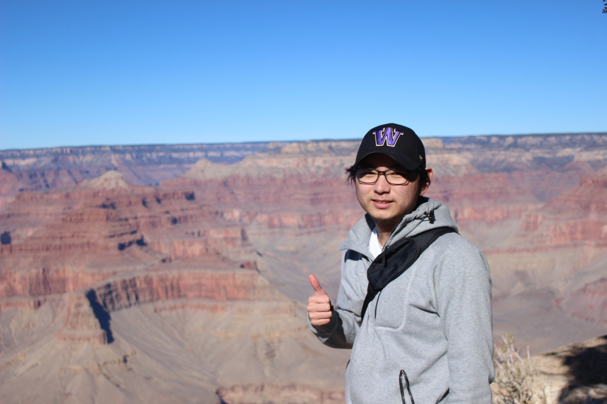

About Me
Overview
My name is Kota Murakami and I am a sophomore at
the University of Washington studying Industial and
Systems Engineering. I was spent the first 16
years of my life in Issaquah, Washington. In the summer of 2020, my family moved to
Tokyo, Japan, where I spent the final two years of high school
at the American School in Japan before coming back to the USA for
college. In terms of academic interests, I am interested in data analysis,
as I believe numbers can uncover ideas and understandings that
could be difficult to find in other ways. Also, with statistics
being thrown around in advertisements, political campaigns, and
other real world situations, knowing where the numbers originate and
having knowledge how to interpret those numbers could help in
developing a deeper understanding of complex concepts.
Outside of School
Outside of school, I enjoy watching soccer (I support Manchester United) and playing games such as
Fifa and Genshin Impact. I have also participated in soccer and karate
in the past, although I have taken some time off of those activities since
I moved to Japan. Also, I have had more opportunities to travel. In the winter
of 2022, I was able to explore the national parks in the southwest, visiting
the Grand Canyon, Bryce Canyon, Zion national park, and more. In the summer of 2023,
I visited Kyoto and Osaka where I was able to try "temari sushi" which is
small bite sized sushi and visit Universal Studios Osaka. I did not expect
to travel as much as I have since entering college but I have enjoyed it
and I hope to get more chances to travel around the world.

Me at the Grand Canyon
More On Me
Resume
Projects